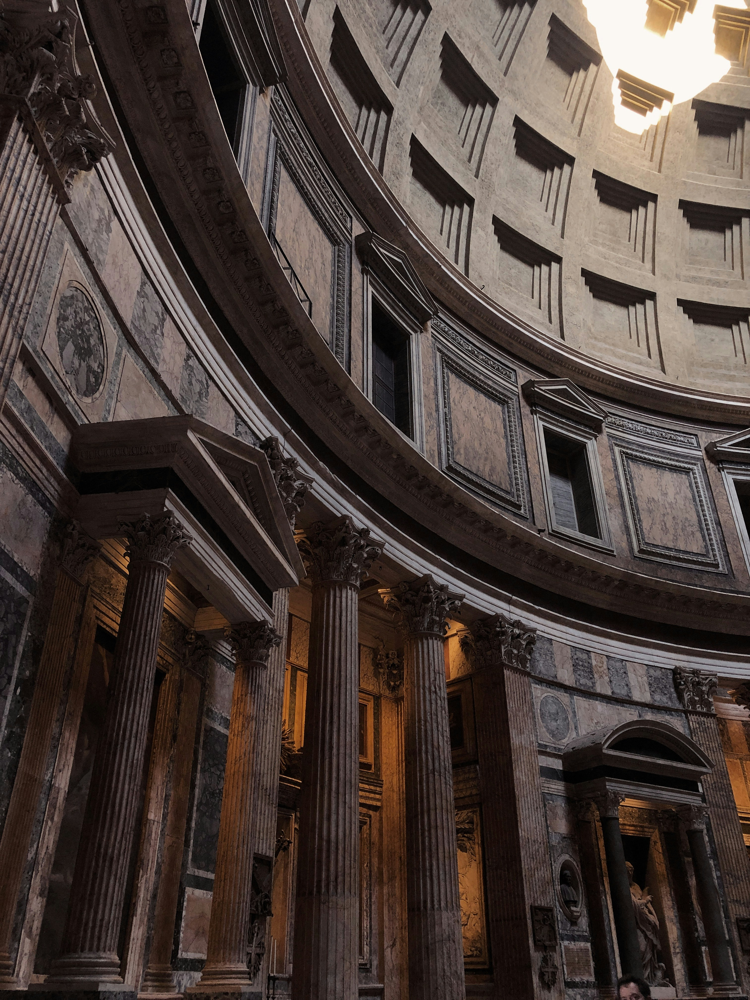
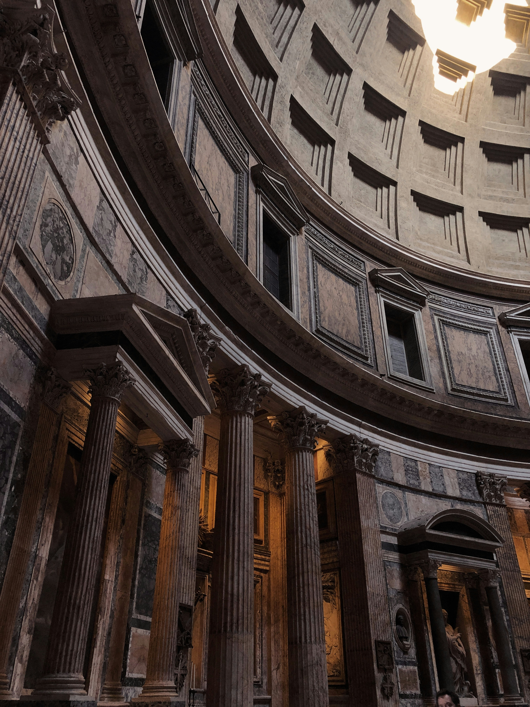

BTS, 런닝맨이 다녀갔다는 그 곳, 나만 모른다고?
종류 : #웅장함, #고대, #로마, #신전
주소 : Piazza della Rotonda, 00186 Roma RM, Italy
 

출처 : unsplash
로마의 판테온(Pantheon)은 고대 로마의 가장 유명하고 잘 보존된 건축물 중 하나입니다. 이 건축물은 로마 제국시대에 마르쿠스 아기프라의 지도 아래 약 27년에서 25년 사이에 건립되었습니다.
판테온은 '모든 신들을 위한'이라는 의미를 가진 이름을 가지고 있으며, 원래는 로마의 모든 신들을 위한 사원으로 사용되었습니다. 그러나 기독교가 국가 종교로 받아들여짐에 따라 7세기 중반에는 기독교 성당으로 변모하게 되었습니다. 이 건축물의 가장 주목할 만한 특징은 그 회백돔 형태로, 지름이 43.3m로 로마의 건축 기술 발전의 명실상부한 증거입니다. 건물 안쪽에는 거대한 회백돔 하단에 8개의 큰 거울판으로 이루어진 거대한 입구가 있습니다.
판테온 내부에 들어가려면 티켓이 필요합니다. 티켓 구매는 한국의 티켓 플랫폼인 '클룩(klook)', '마이리얼트립(myrealtrip)', 등과 같은 곳에서 예매가 가능합니다.
종류 : #신사, #절, #여우신령, #소원성취
주소 : 68 Fukakusa Yabunouchicho, Fushimi Ward, Kyoto, 612-0882, Japan
출처 : unsplash
후시미 이나리 신사(富士見稲荷神社)는 일본 교토에 있는 이나리 신을 섬기는 신사로, 한적하고 아름다운 풍경 속에 자리하고 있습니다. 이 신사는 교토에서 가장 오래된 신사 중 하나로, 그 역사는 수백 년 전으로 거슬러 올라갑니다.
후시미 이나리 신사에는 다른 신사에 비해 토리이가 유난히 많은데 약 1만 개가 설치되었다고 합니다. 에도 시대 이후부터 소원을 이루기 위해, 또는 소원을 이룬 경우 신에게 감사하는 뜻으로 일정 금액을 헌금하면 해당 금액에 맞는 토리이에 날짜와 이름을 새겨 신사에 설치하는 풍습이 생겼다고 합니다.
이나리 신이 부리는 사자(使者)는 여우 모습을 하고 있는데, 야생에서 보이는 여우가 아니라 우리 눈에는 보이지 않는 투명한 여우라고 합니다. 그래서 이나리 신사 곳곳에는 하얀 여우 상들이 있습니다.
 후시미 이나리 신사의 모습!
후시미 이나리 신사의 모습!종류 : #중세, #성당, #종탑, #광장
체험장소 : 27 Shotover Street, Queenstown 9300 New Zealand
출처 : unsplash
프라하 구시가지(Prague Old Town)는 체코의 수도 프라하에서 가장 역사적이고 매혹적인 지역 중 하나입니다. 이 지역은 프라하의 중심부에 위치하고 있으며, 그 시초는 중세 시대로 거슬러 올라갑니다.
프라하 구시가지의 중심에는 세계적으로 유명한 아스트로노미칼 시계(Astronomical Clock)가 있습니다. 이 시계는 15세기에 건립되었으며, 매 시간마다 작동하여 다양한 동작을 보여줍니다. 구시가지 광장 주변에는 고딕 양식의 건물들이 서로 얽혀 있으며, 그 중에서도 티인 교회(Týn Church)는 특히 두드러집니다.
프라하 구시가지는 또한 바로 옆에 프라하 성(Prague Castle)과 카를교를 통해 연결되어 있습니다. 이 지역은 매력적인 골목길과 상점, 레스토랑이 즐비하여 방문객들이 역사와 문화를 만끽할 수 있는 멋진 장소입니다.


BTS, 런닝맨이 다녀갔다는 그 곳, 나만 모른다고?

현재 1등 여행지!! 이탈리아에 대해 알아보자!

(속보) 대한항공이 뜬다…포르투갈 '들썩들썩'
꿈과 모험을 위한 문을 열어주는 Bon-Voyage! 세계 각지의 아름다운 여행지와 현지 문화를 경험하세요. Bon-Voyage는 대한민국 사람들을 위한 해외여행 가이드 사이트입니다. 당신은 해외여행과 관련된 정보를 얻을 수 있으며, 다른 사람들과의 정보 공유를 통해 더 나은 계획을 수립할 수 있습니다.